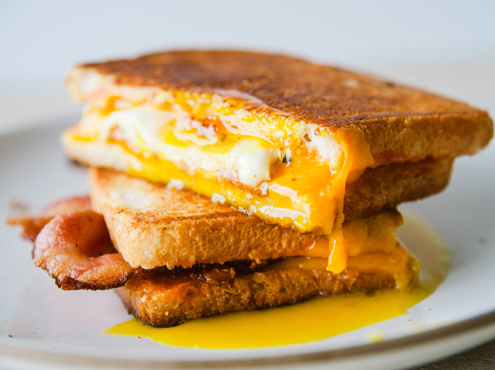

Fried Egg Sandwich
 ̑
Ingredients
̑
- Egg
- Bread
- Cheese Slice
- Pepper
Recipe
- Take a small frying pan and grease it with butter, making sure the butter doesn't get charred.
- Crack open an egg keeping the yolk intact. The fresher the eggs the better. Alongside put two slices of bread to toast in a pan or a toaster.
- Season the egg with some pepper and salt.
- Once the eggs are done with the yolk still runny put a slice of cheese on it and let the cheese melt.
- Carefully place the egg-cheese on the toasted bread and make a sandwich of it
- Enjoy